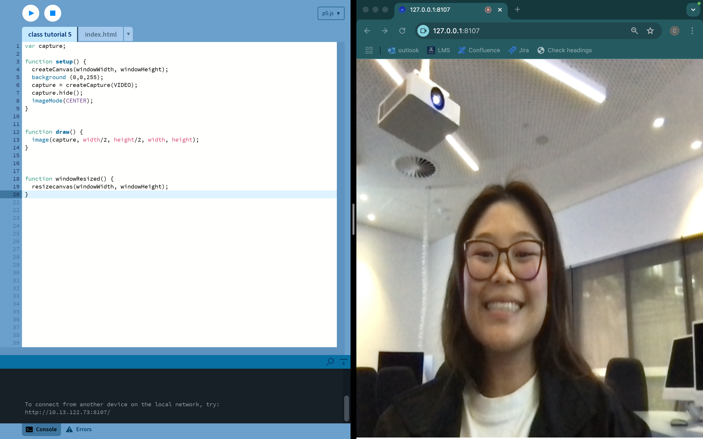

This class tutorial reminded me of pointilism. I wanted to see if I could try push the effect to look a little more like pointilism paintings.
I took some inspiration from this tutorial, but added a twist to make it more interactive. I wanted to incorporate the tutorials we learnt in class and I was reminded of the camera capture effect. I decided to switch out the static image and replace it with camera pixel information instead.
